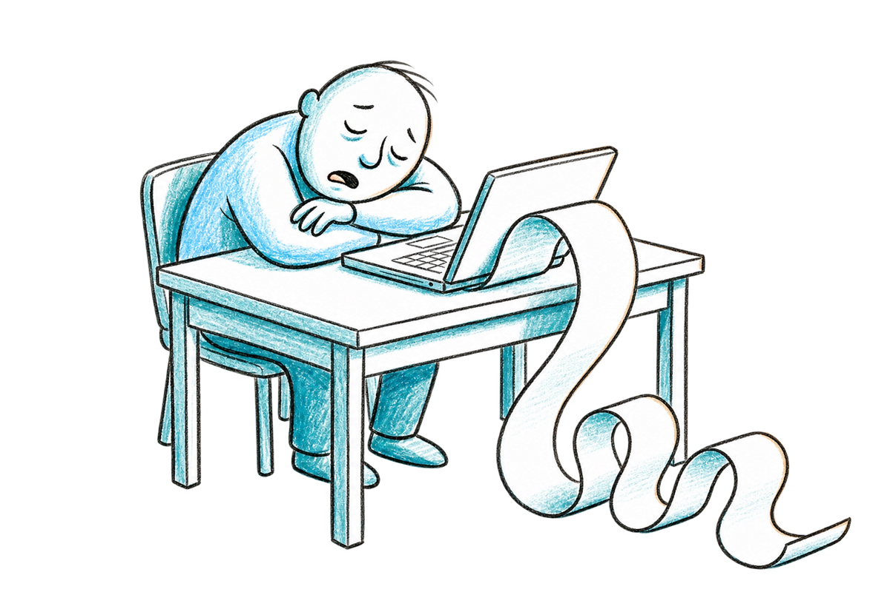
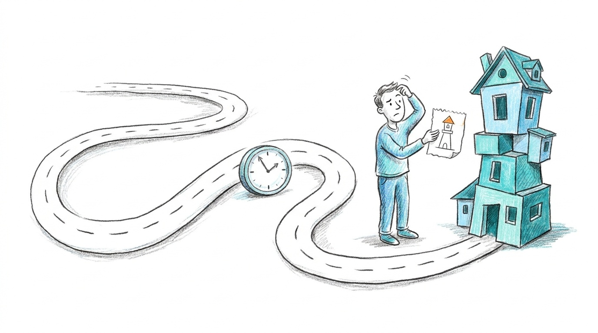
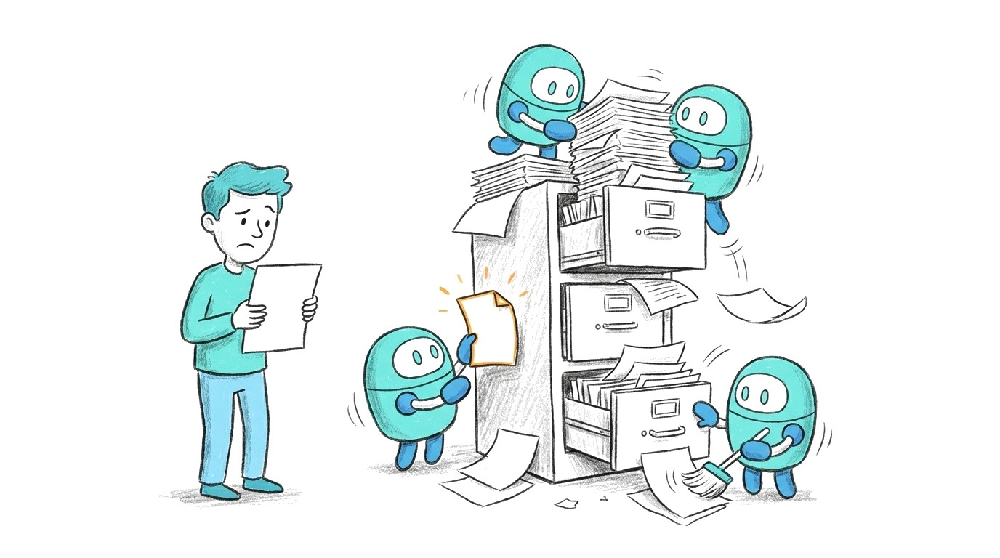
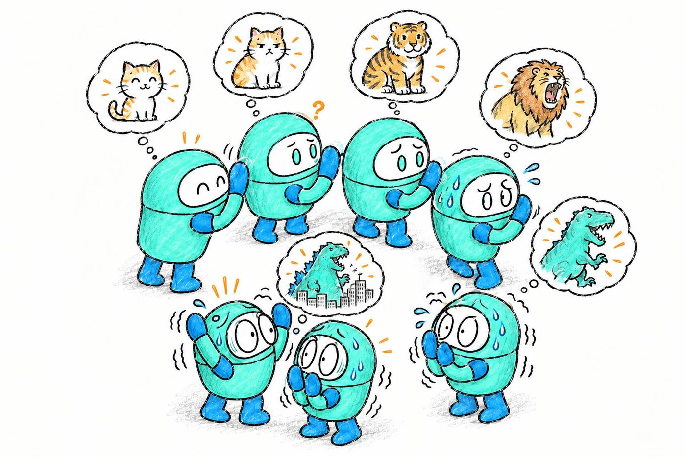
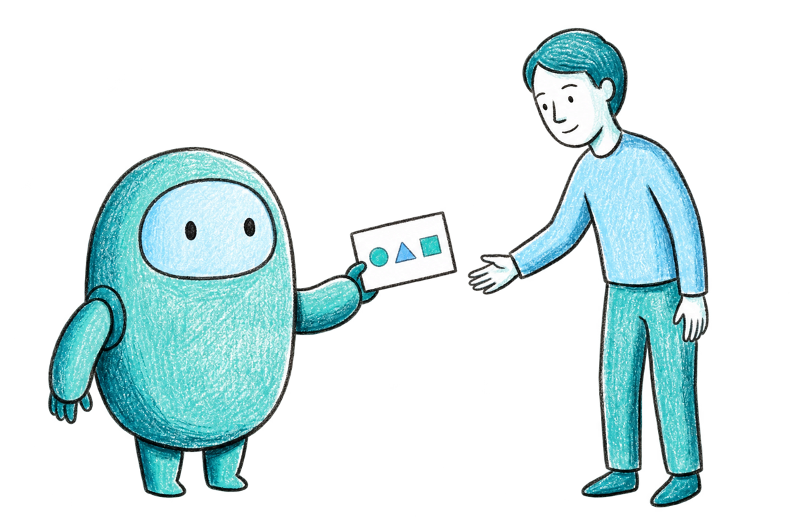
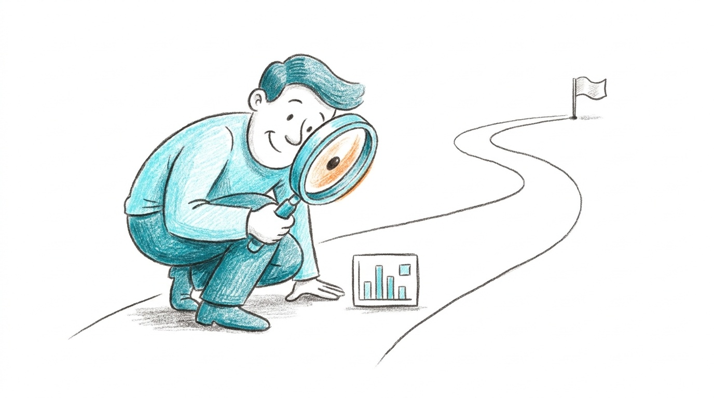
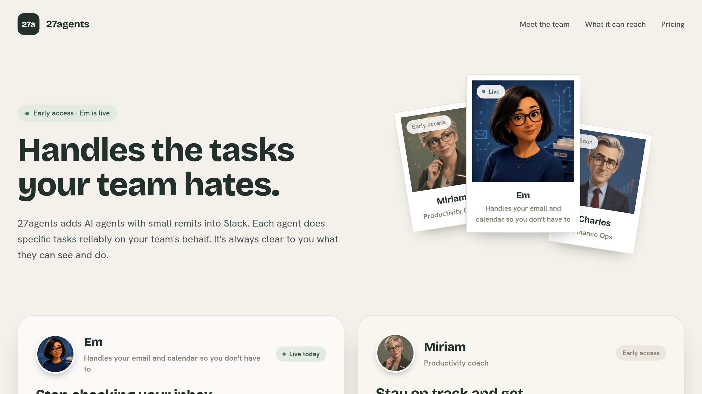
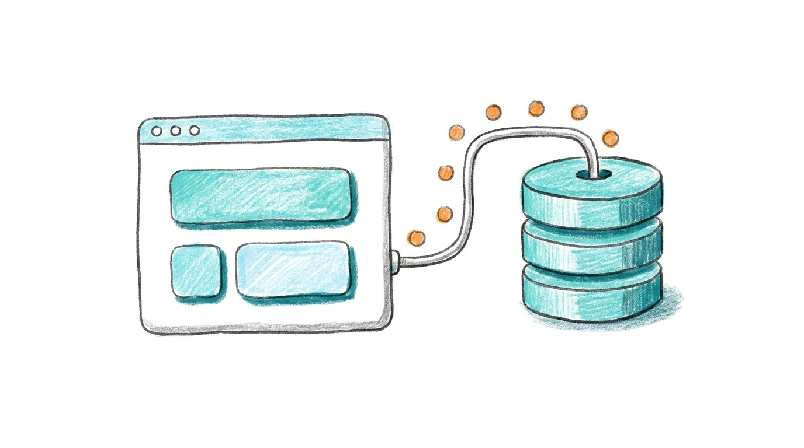
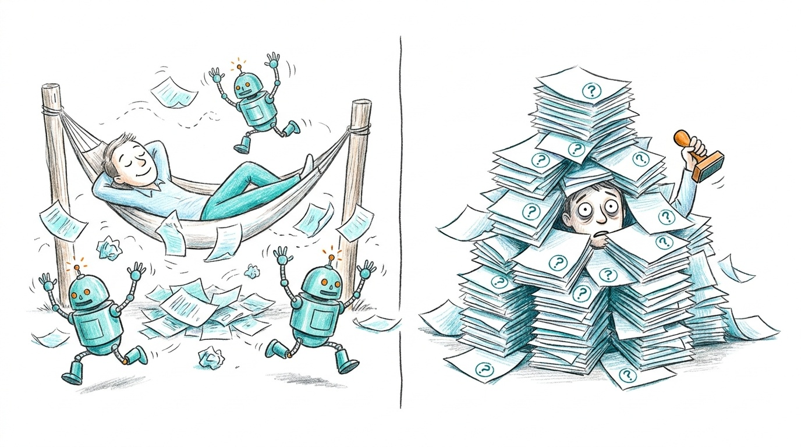
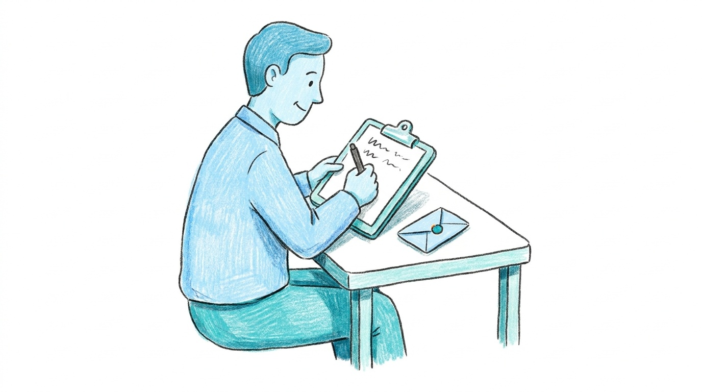

I no longer read code*
It's just SO BORING.
* or my vault, or most of what my agents make
0:00 · 1 min · What I sayFor production code that matters, I still do. It is still boring. Then point at the asterisk: or my vault, or most of what my agents make. That is the real problem: I have stopped reading the raw output of everything.
Reading the output doesn't tell me if the intent is right
Brief→Build→CI→Deploy→Click around→"That's not what I meant"
- The code shows what it does, not what I meant.
- The app shows what I meant, after an age of CI.
- I don't want to stop running tests.

0:01 · 1 min · What I sayThe code tells me what it does. It rarely tells me whether that is what I meant. Using the app does tell me, but only after the build, CI and the deploy. By the time I find the intent was wrong, I have burnt a whole loop. And I don't want to stop running tests. So how do I reconcile that?
Where do all my ideas go?
This is where a lack of feedback hurts you, even if you never write code. My second-brain vault had the same problem.
"I know my agents have been cracking on getting things done, checking and recording things, but where the information goes I'm not sure about… can I retrieve the ideas easily, or have they all been covered in AI slop?"My daily note, Monday 14 September, written by hand

14agents with their own scheduled jobs
741source files filed in the last month
0:02 · 2 min · What I sayI wrote this by hand. I was beyond worried about only ever talking to my agents: I was having a moment. I stopped reading my Obsidian vault. After a while I got worried about what the AI was putting in it. Read the quote. Then: "the slight feeling of having to trust subordinates that I don't quite trust." Fourteen named agents with their own scheduled jobs. 741 new source files filed into my vault in a month: a fifth of everything I have ever saved there. How many did I read?
Loops make this worse
"These things let loose are a disaster. They basically dilute the message each iteration… How do you keep it in the right direction even if out of control, without taking AN ABSOLUTE AGE?"David, on WhatsApp, 14 September
"Getting it to present the exact information you need really clearly so you can make quick decisions. I'm thinking the kind of feedback that teams prep for execs."Me

0:04 · 1 min · What I sayDavid asked the question that started this talk. Point at David. Every loop iteration dilutes the message a little more. My answer was a whole throwaway editing interface to answer one complex question with trade-offs. That is the talk.

Getting agents to hand you the decision
How can we get agents to hand us good decisions, just like an exec gets?
Delegation, not abdication · Chris Parsons · AI Anonymous · 25 September 2026
0:05 · 1 min · What I sayAn exec does not read the raw work. Their team hands them a decision: the options, the trade-offs and a cheap way to give an answer. I want my agents to do the same. The agent does the work. The judgement stays with me.
Richer feedback, earlier
"A massively underrated part of coding now is getting the AI to make it easy for you to know whether what it has done is correct. That is work I can ask it to do, just as I ask it to build a feature."Me, in "(I Am No Longer) Coding With AI", 11 September 2026 · chrismdp.com/coding-with-ai

0:06 · 1 min · What I sayKeep the tests: they check the code does what it says. They cannot tell you whether you asked for the right thing, and using the app tells you only after the whole loop. A review page the agent builds tells you in minutes. A review page is a normal request now. Building the editor is cheaper than describing your edits in chat. Three examples.
Example 1
Does this map fit the world?

- An AI checks every generated map.
- Was that AI judging properly?
- Astra built me a page to find out.
- My notes: "the fade shouldn't be there", "broken roads".
Open the map checker ↗
0:07 · 2 min · What I sayI am building a text adventure. An AI checks every generated map, and I did not know whether to trust its judgement. So Astra built me this: the whole map, three enlarged regions, and under each one, "What do you see here?" I gave it game-development taste without opening the code.
Example 2
Editing a newsletter

- A comment box under every paragraph.
- Three rounds: draft, comments, changes, new page.
- Every round kept what I asked for and what changed.
Open the review page ↗
0:09 · 1 min · What I sayBackground: my blog is a Jekyll site, so every post is a text file, and editing with an agent meant describing each change in chat: "the third paragraph, second sentence…". This was the first time I asked for a page instead. The coding-with-AI post, reviewed three times on a page. Open it only if there is time.
27agents
I'm building 27agents.ai

- AI colleagues in Slack, one slice of work each.
- Em is live today: email and calendar.
- Urgent mail reaches you at once. Everything else waits for the digest.
27agents.ai ↗
0:10 · 1 min · What I sayThis is what I am building: 27agents. AI colleagues that sit in Slack, each doing one slice of work reliably. Em is live today and handles email and calendar. Her whole job depends on one judgement: what is urgent and what can wait. So how do I know she is making that call well? That is the next example.
Example 3 · Live demo · 4 min
The Jev label sheet

How should my email triage work, and is the new model better than the old one?
- Hundreds of made-up twins of my real emails. Every name invented.
- "Looks right", or change it. A note for the rule behind the call.
Open the label sheet ↗
0:11 · 4 min · What I sayEach email shows its current label, what the old system thought and what the new model thought. j and k to move, 1 to 4 to label. Show a newsletter where the old and new models disagree. Label it. Add a note such as "urgent only if the digest is after 5pm". Reload: it is still there. If the network fails, talk over the screenshot.
Live demo · 2 min
Meta slide: I reviewed this deck the same way

Screenshot goes here: /assets/img/talk-deck-review.jpg
- Select any text on a slide and comment on it.
- Or leave a note on the whole slide.
- Export the notes as JSON. The agent reads them and edits the deck.
- It only runs on my machine.
0:15 · 2 min · What I sayOne more example: this deck. I reviewed it the same way: a small script on my own blog, only running on my machine. Demo: select a phrase on this slide, comment, then open the panel and show the JSON the agent reads. It started as a review tool for blog posts, and I asked the agent to extend it to slides this afternoon.
The page remembers now
Easy to build these now: artifacts remember.
Claude artifactsA published page can store data, for each person or shared between everyone who opens it.
Codex SitesCodex builds and hosts small web apps with their own data and files. In preview since June.

- My answers persist.
- The agent reads them back.
- A second person can review too.
0:17 · 1 min · What I sayThat reload is the new part. The review page stops being a disposable picture and becomes a working tool. And it is easy to build these now.
How not to do it
Two ways to fail
Abdication"If AI is building everything and you are no longer looking, you have abdicated rather than delegated."
Loops "amplify judgement when the human understands the work, and amplify abdication when the human uses the loop to avoid understanding it." Addy Osmani
The approval monkey"35 things to do, mostly reviewing reasonable but not great draft emails… reduced to some kind of glorified approval monkey."
Me, April 2026

0:18 · 2 min · What I sayHere's how not to do it! A human "on the loop" for a dozen systems is effectively out of the loop. More review makes you the approval monkey. Less review is abdication. The way out is what you have just seen: a change of format.
Lesson
Blind reviews and bias
- Describe what you see. Before you are told anything.
- Then the requirements. The geography the game needed.
- Then the earlier AI judgements. Hidden until you have committed.

"Astra had made me a form to help it work out whether it was judging another AI correctly."
0:20 · 2 min · What I sayIf I see the AI's verdict first, I anchor on it and nod along. So the map page hid it until I had committed. I was not reviewing the map. I was checking the reviewer, blind. That is how you manage a fleet you do not fully trust. And I did not design the page: "What struck me was how much of the review process the AI had built for me." Questions?
0:22 · DiscussionOpen it up.